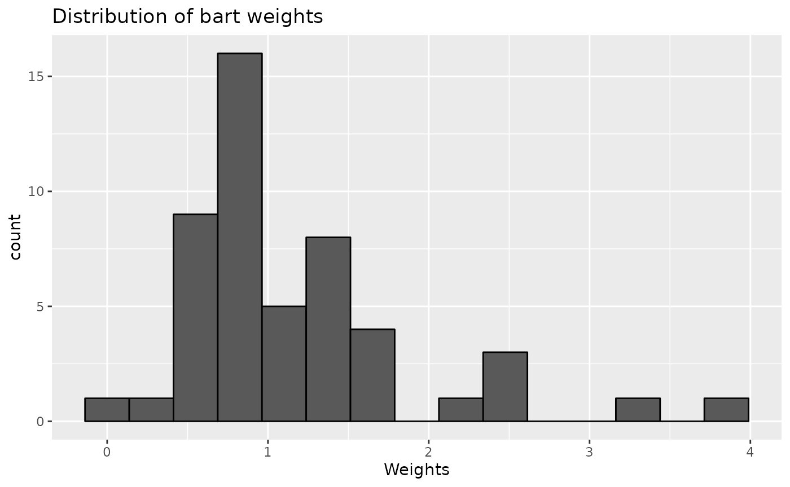
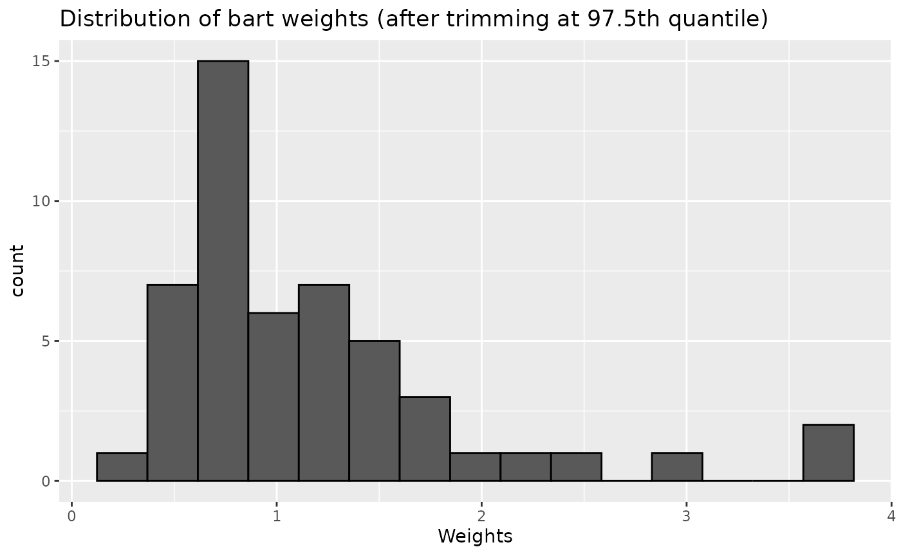
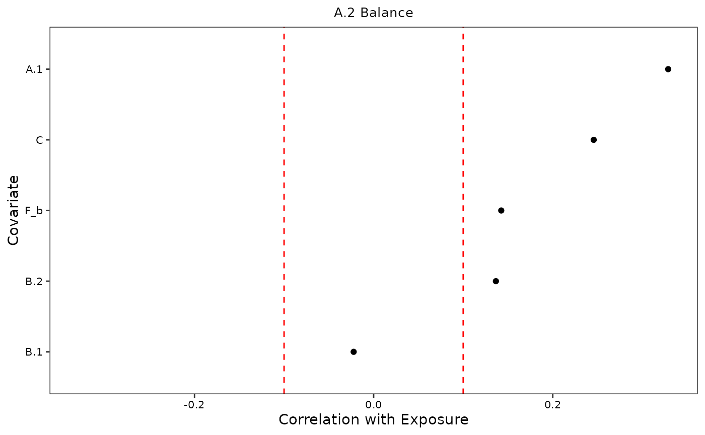
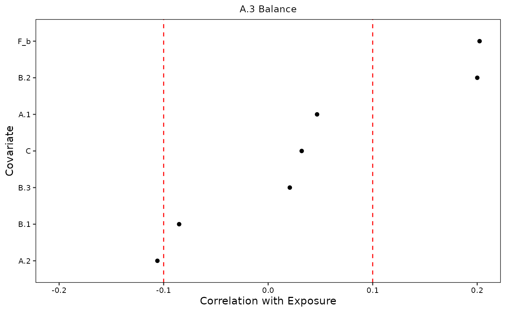
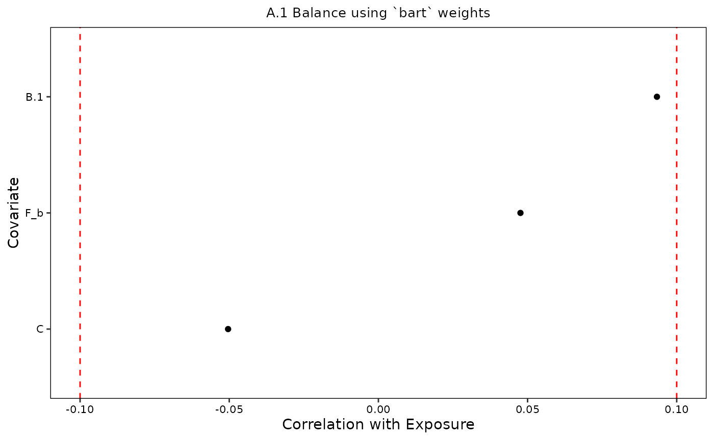
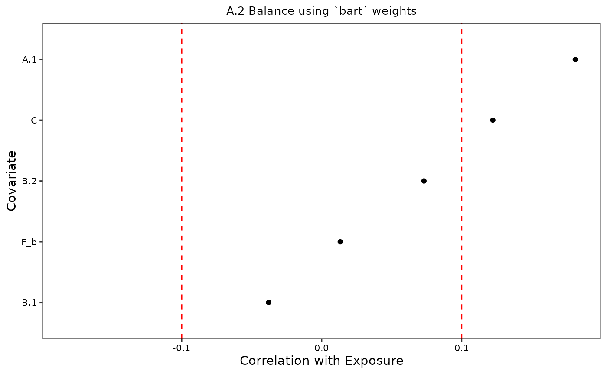

library(devMSMs)
data <- data.frame(
A.1 = rnorm(n = 50),
A.2 = rnorm(n = 50),
A.3 = rnorm(n = 50),
B.1 = rnorm(n = 50),
B.2 = rnorm(n = 50),
B.3 = rnorm(n = 50),
C = rnorm(n = 50),
F = sample(c("a", "b"), size = 50, replace = TRUE)
)
# Init ----
obj <- initMSM(
data,
exposure = c("A.1", "A.2", "A.3"),
ti_conf = c("C", "F"),
tv_conf = c("B.1", "B.2", "B.3")
)
obj## Exposure (continuous): A.1, A.2, A.3
## Variable and their encodings:
## var type time
## A.1 exposure 1
## A.2 exposure 2
## A.3 exposure 3
## B.1 tv_conf 1
## B.2 tv_conf 2
## B.3 tv_conf 3
## C ti_conf -1
## F ti_conf -1
# Formula ----
f <- createFormulas(obj = obj, type = "full")
f## USER ALERT: Please manually inspect the full balancing formula below:## At time point 1, the full formula for A.1 is:
## A.1 ~ C + F## USER ALERT: Please manually inspect the full balancing formula below:## At time point 2, the full formula for A.2 is:
## A.2 ~ C + F + B.1 + A.1## USER ALERT: Please manually inspect the full balancing formula below:## At time point 3, the full formula for A.3 is:
## A.3 ~ C + F + B.1 + B.2 + A.1 + A.2
f <- createFormulas(obj = obj, type = "short")
f## USER ALERT: Please manually inspect the short balancing formula below that includes time-varying confounders at t-1 only:## At time point 1, the short formula for A.1 is:
## A.1 ~ C + F## USER ALERT: Please manually inspect the short balancing formula below that includes time-varying confounders at t-1 only:## At time point 2, the short formula for A.2 is:
## A.2 ~ C + F + B.1 + A.1## USER ALERT: Please manually inspect the short balancing formula below that includes time-varying confounders at t-1 only:## At time point 3, the short formula for A.3 is:
## A.3 ~ C + F + B.2 + A.2
# Weights ----
w <- createWeights(data = data, obj = obj, formulas = f, method = "cbps")
w## For the `cbps` weighting method, the median weight value is 1.06 (SD = 0.74; range = 0.05-3).
w <- createWeights(data = data, obj = obj, formulas = f, method = "glm")
w## For the `glm` weighting method, the median weight value is 1.05 (SD = 0.55; range = 0.12-3).
# overwrite default options of `WeightIt::weightitMSM`
w <- createWeights(
data = data, obj = obj, formulas = f, method = "bart",
stabilize = FALSE
)
w## For the `bart` weighting method, the median weight value is 0.88 (SD = 0.75; range = 0.13-4).
plot(w)
# Trim weights ----
t <- trimWeights(w, at = 0.975, lower = FALSE)## Trimming weights to 97.5%.
t## For the `bart` weighting method, after trimming at 97.5th quantile, the median weight value is 0.88 (SD = 0.71; range = 0.13-3).
plot(t)
# Assess balance ----
b <- assessBalance(data = data, obj = obj)
b## USER ALERT:## As shown below, 8 out of 15 (53.3%) covariates across time points remain imbalanced with a remaining median absolute value correlation/std mean difference of 0.20 (range = -0.11 - 0.33):
##
## +----------+-----------------------+----------------------------+
## | Exposure | Total # of covariates | # of imbalanced covariates |
## +==========+=======================+============================+
## | A.1 | 3 | 1 |
## +----------+-----------------------+----------------------------+
## | A.2 | 5 | 4 |
## +----------+-----------------------+----------------------------+
## | A.3 | 7 | 3 |
## +----------+-----------------------+----------------------------+
##
## Table: Imbalanced covariates
plots <- plot(b, verbose = FALSE)
plots[[1]]
plots[[2]]
plots[[3]]
bw <- assessBalance(data = data, obj = obj, weights = w)
bw## USER ALERT: Using `bart` weighting method:## As shown below, 5 out of 15 (33.3%) covariates across time points remain imbalanced with a remaining median absolute value correlation/std mean difference of 0.14 (range = -0.14 - 0.18):
##
## +----------+-----------------------+----------------------------+
## | Exposure | Total # of covariates | # of imbalanced covariates |
## +==========+=======================+============================+
## | A.1 | 3 | 0 |
## +----------+-----------------------+----------------------------+
## | A.2 | 5 | 2 |
## +----------+-----------------------+----------------------------+
## | A.3 | 7 | 3 |
## +----------+-----------------------+----------------------------+
##
## Table: Imbalanced Covariates using `bart`
plots <- plot(bw, verbose = FALSE)
plots[[1]]
plots[[2]]
plots[[3]]